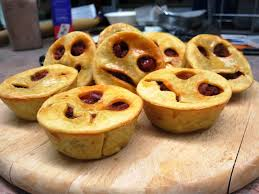
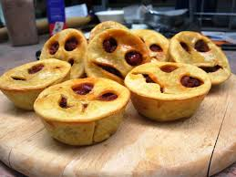

Inside Scoop : Eyes for Pies
As holidays approached growing up, all my sister and I can remember is the smell of cookies and pies baking in the oven. Over the years, with these memories in mind, decided to start our own website showcasing the wonderful things we remember.
28 Mono St.
Mammoth Lakes,
CA
Phone:
760-977-1474
 
